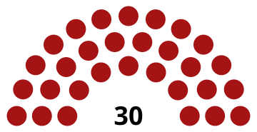
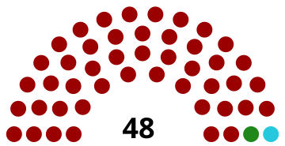

Совет Федерации (СФСРЮ)
Сове́т Федера́ции — высший представительный и законодательный орган государственной власти Советской Федеративной Социалистической Республики Юльсанна (СФСРЮ). Является однопалатным парламентом, осуществляющим законодательную, контрольную и кадровую функции.
История
Совет Федерации был учреждён 2 января 2025 года в ходе преобразования Республики Юльсанна в Советскую Федеративную Социалистическую Республику Юльсанна на основании закона о федерализации и смене наименования государства. В этот же день был сформирован первый созыв парламента.
Двухпалатный период (2 января — 1 августа 2025 года)
Первоначально, с момента образования СФСРЮ, высший законодательный орган именовался Федеральным собранием и состоял из двух палат:
- Совет Федерации (верхняя палата): Формировался по квотам от субъектов федерации. Каждый регион делегировал 4 депутатов: по 2 представителя от исполнительной и законодательной ветвей власти субъекта, которые назначались главой региона (губернатором или президентом республики).
- Народная палата (нижняя палата): Избиралась населением. Численность палаты варьировалась: в I созыве она составляла 150 депутатов, во II созыве (после изменения числа субъектов) — 142 депутата.
Переходный период ознаменовался политическим кризисом: выборы 7 февраля 2025 года в Совет Федерации (верхнюю палату) были признаны недействительными из-за фальсификаций в пользу ЛДП СФСРЮ, что привело к аннулированию результатов и назначению новых выборов на 18 мая.
Реформа 1 августа 2025 года
1 августа 2025 года вступила в силу конституционная реформа, упразднившая двухпалатную систему. В целях оптимизации законодательного процесса Народная палата была расформирована, а её полномочия и депутатский корпус объединены с верхней палатой. Объединённый орган сохранил за собой название «Совет Федерации» и стал однопалатным.
Слияние палат произошло без досрочного прекращения полномочий депутатов: объединённый Совет Федерации продолжил свою работу до истечения сроков полномочий текущего созыва.
Сроки полномочий (Созывы)
История парламентаризма в СФСРЮ насчитывает три созыва (с учётом изменений структуры):
| Созыв | Период полномочий | Статус | Примечания |
|---|---|---|---|
| I созыв | 2 января 2025 — 19 мая 2025 | Переходный | Сформирован полностью из депутатов КП СФСРЮ. Включал двухпалатное Федеральное собрание. |
| II созыв | 20 мая 2025 — 19 октября 2025 | Переходный | Сформирован по итогам повторных выборов. Включал двухпалатное Федеральное собрание (до 1 августа). |
| III созыв | 20 октября 2025 — 30 сентября 2026 | Действующий | Первый созыв после конституционной реформы. Является однопалатным Советом Федерации. |



Порядок формирования
Согласно статье 77 Конституции СФСРЮ (в редакции от 1 августа 2025 года), Совет Федерации является однопалатным и формируется следующим образом:
- Срок полномочий: 1 год (избирается одновременно с Президентом).
- Минимальный возраст: 14 лет.
- Требования к кандидату: Гражданство СФСРЮ, наличие избирательного права, постоянное проживание на территории соответствующего субъекта не менее 5 лет.
Структура состава: Общее количество депутатов составляет 250 человек. В составе представлены:
- Представители от субъектов СФСРЮ (республик, краёв, областей, городов федерального значения, автономных областей, федеративной республики и империй).
- Депутаты, избранные народом путём прямого тайного голосования.
Количество мест распределяется таким образом, чтобы сумма представителей субъектов и избранных народом депутатов составляла 250. Также предусмотрено 10 вакантных мест, резервируемых для дополнительного делегирования в особых случаях.
Полномочия
Согласно статье 83 Конституции СФСРЮ, Совет Федерации обладает широким кругом полномочий:
- Законодательные: Утверждение федеральных законов и новых законодательных актов. Принятие федеральных конституционных законов (требуется ¾ голосов от общего числа депутатов).
- Кадровые: Назначение выборов Президента и Вице-президента СФСРЮ. Принятие отставки Президента и Вице-президента, а также отрешение их от должности. Утверждение кандидатур заместителей Председателя Правительства и федеральных министров.
- Контрольные: Выражение недоверия Правительству СФСРЮ. Рассмотрение вопросов о доверии Правительству.
Порядок роспуска
Согласно статье 88 Конституции, Президент имеет право распустить Совет Федерации при следующих условиях:
- После трёхкратного отклонения предложенных Президентом кандидатур членов Правительства.
- После повторного выражения недоверия Правительству (если Президент не принимает решения об отставке кабинета).
- После повторного отказа в доверии Правительству.
Ограничения на роспуск:
- В течение 1 месяца после избрания Совета Федерации.
- В период действия военного или чрезвычайного положения.
- С момента выдвижения обвинения против Президента до вынесения решения Верховным судом.
При роспуске Президент обязан назначить дату новых выборов так, чтобы новый состав собрался не позднее чем через 3 недели с момента роспуска.
Структура и руководство
Руководство:
- Председатель Совета Федерации — назначается Президентом СФСРЮ. Действующий председатель — Алёна Юрьевна Филина (с 19 июля 2025 года).
- Заместители Председателя — избираются из состава депутатов.
Внутренняя организация: Для подготовки законопроектов и экспертизы формируются профильные комитеты и комиссии. Деятельность регламентируется внутренним регламентом и правилами распорядка. Проводятся парламентские слушания по вопросам ведения.
Заседания: Первое заседание нового созыва собирается на третий день после избрания. Открывает его старейший по возрасту депутат. Заседания, как правило, являются открытыми для общественности и СМИ.
Порядок голосования и принятия решений
| Вопрос голосования | Требуемое большинство |
|---|---|
| Федеральные законы | Простое большинство от общего числа депутатов |
| Федеральные конституционные законы | ¾ голосов от общего числа депутатов |
| Выражение недоверия Правительству | Простое большинство |
| Отклонение кандидатур членов Правительства | Простое большинство |
Процедура принятия законов: Законопроект вносится в Совет Федерации. Проекты о налогах, займах и расходах требуют обязательного заключения Правительства. После принятия закон в течение 5 дней передаётся Президенту и Вице-президенту, которые подписывают его в течение 14 дней.
Вето: Президент имеет право вето на федеральные законы. Вето на федеральный конституционный закон может быть преодолено только решением самого Совета Федерации (квалифицированным большинством). Для проверки конституционности законов Президент может созывать Конституционный совет.
Фракции и политический состав
В Совете Федерации представлены несколько политических сил. Ниже приведена динамика изменения состава по созывам (с учётом объединения палат с 1 августа 2025 года):
| Фракция | I созыв (2025) | II созыв (2025—2026) | III созыв (с 2026) |
|---|---|---|---|
| Коммунистическая партия СФСРЮ (КП СФСРЮ) | 30 | 46 | 152 |
| Либерально-демократическая партия СФСРЮ | 0 | 0 | 5 |
| Партия «Груша» | 0 | 1 | 49 |
| Партия «Единая Юльсанна» | 0 | 1 | 49 |
| Партия Поповой | 0 | 0 | 5 |
| Всего | 30 | 48 | 260 |
Примечание: Рост численности в III созыве объясняется объединением депутатских корпусов обеих упразднённых палат в единый состав.
Лидеры фракций (по состоянию на август 2026 года)
| Фракция | Лидер |
|---|---|
| КП СФСРЮ | Гордеихин Дмитрий Алексеевич |
| Либерально-демократическая партия СФСРЮ | Илюхин Андрей Сергеевич |
| Партия «Груша» | Илюхина Ирина Владимировна |
| Партия «Единая Юльсанна» | Зорина Юлия Александровна |
| Партия Поповой | Попова Галина Михайловна |
Статус депутата
Согласно статье 79 Конституции СФСРЮ, депутаты Совета Федерации обладают неприкосновенностью в течение всего срока полномочий. Они не могут быть задержаны, арестованы или подвергнуты обыску, за исключением случаев задержания на месте преступления. Вопрос о лишении депутатской неприкосновенности решается Президентом по представлению Генерального прокурора СФСРЮ.